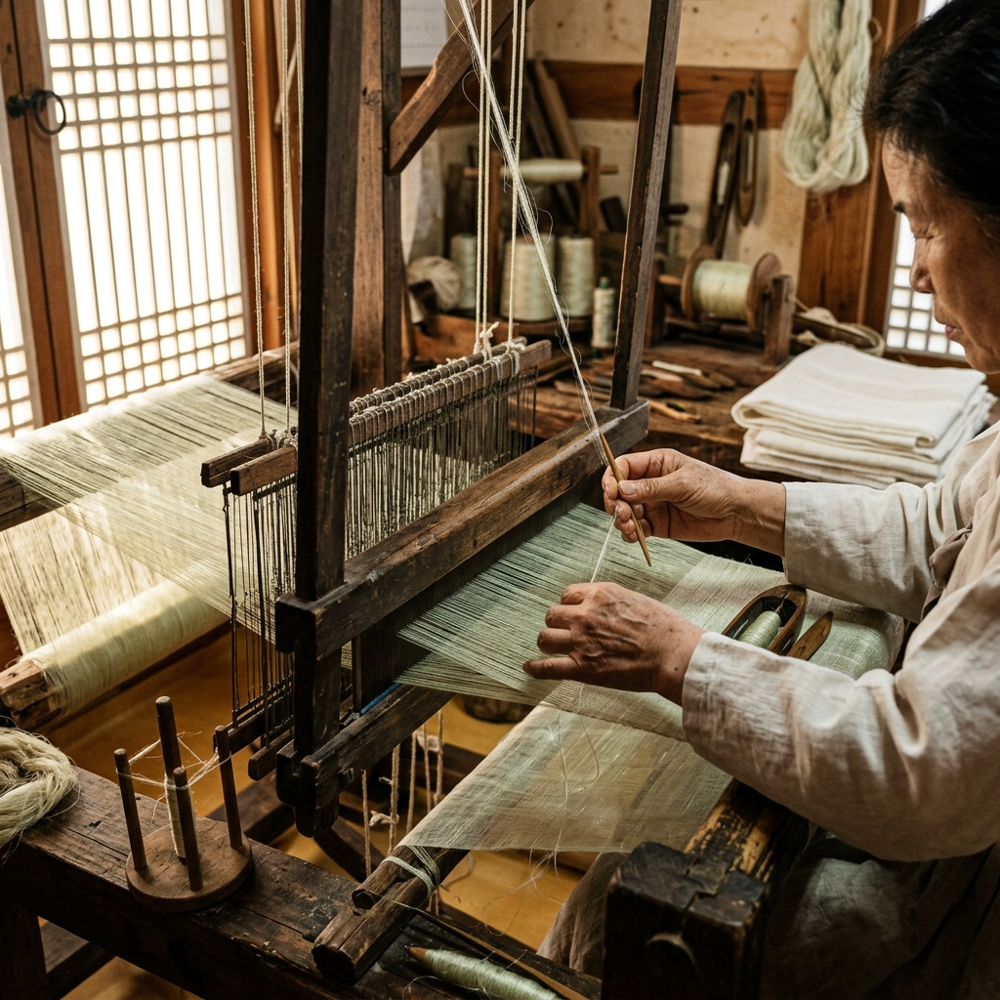
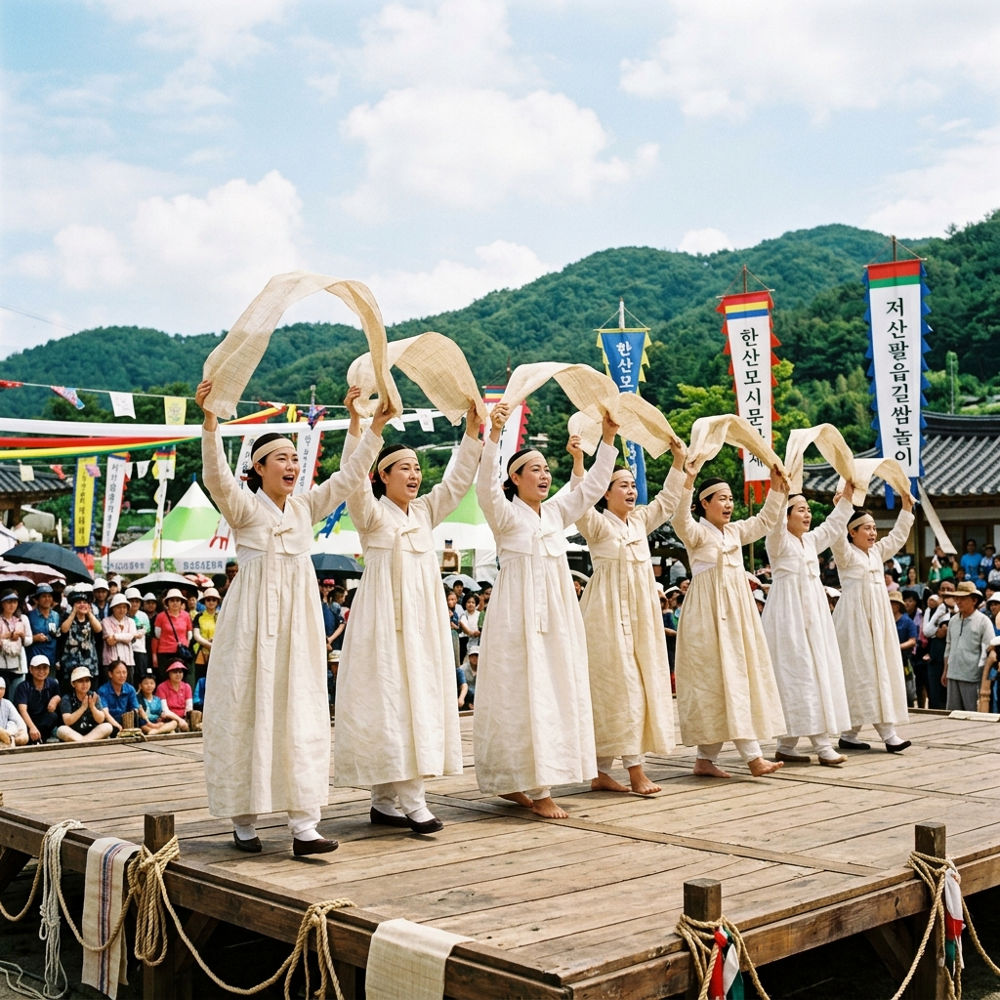

한산모시는 충청남도 서천군 한산면 일대에서 재배·제작되는 전통 직물로, 모시풀(苧麻)의 섬유를 손으로 뽑고 세척해 손베틀로 짜는 고난도 수작업 공예입니다.
고려 시대부터 왕실에 진상될 만큼 귀한 직물로 여겨져 왔으며, 조선 시대에도 최상급 여름 의복의 소재로 사랑받았습니다.
2011년 유네스코 인류무형문화유산에 등재되었으며, 저산팔읍길쌈놀이는 충청남도 무형문화재 제1호로 지정되어 있습니다.
모시의 섬유는 삼베보다 훨씬 가늘고 투명도가 높아, 여름에 통기성이 뛰어나고 피부에 달라붙지 않는 쾌적함이 특징입니다.
한산모시 한 필을 완성하려면 숙련된 장인이라도 수십 일의 작업이 필요한데, 이 과정 하나하나가 무형문화재로서의 가치를 갖습니다.

2026년 한산모시문화제는 6월 12일(금)부터 14일(일)까지 3일간 한산모시관 일원에서 펼쳐집니다.
개막일인 12일(금)에는 개막 공연과 함께 저산팔읍길쌈놀이 시연이 시작됩니다.
13일(토)에는 모시옷 패션쇼와 체험 프로그램이 집중 운영되며, 가족 단위 방문객이 가장 많이 몰리는 날입니다.
14일(일) 마지막 날에는 모시 공예품 대거 할인 판매와 함께 폐막 행사가 이어집니다.
3일간 운영되는 체험 프로그램 중 미니베틀짜기와 모시옷 입기 체험은 예약 없이 현장에서 선착순으로 참여 가능합니다.
일부 심화 체험(한산모시학교 2시간 과정)은 사전 예약이 필요하므로, 관심 있는 분은 041-957-9030으로 미리 문의하는 것이 좋습니다.
| 항목 | 내용 |
|---|---|
| 축제 기간 | 2026.06.12(금) ~ 06.14(일), 3일간 |
| 장소 | 한산모시관 일원, 충남 서천군 한산면 |
| 입장료 | 무료 (체험 소재비 별도) |
| 주요 프로그램 | 길쌈놀이 시연, 모시옷 패션쇼, 베틀짜기 체험 |
| 문의 | 041-957-9030 |
저산팔읍길쌈놀이는 한산을 포함한 서천·홍산·임천·비인·남포·결성·보령·해미 등 옛 8개 고을에서 행해지던 길쌈 민속 경연을 재현한 공연입니다.
'저산팔읍'이란 과거 모시 생산의 중심지였던 8개 읍을 통칭하는 이름으로, 그 역사적 자부심이 공연 곳곳에 녹아 있습니다.
공연 중에는 씨아(섬유 분리), 베틀(직조), 표백 과정 등 모시 생산의 전 과정을 순서대로 보여주며, 장인들의 손놀림이 살아있는 공예 시연을 통해 생생하게 전달됩니다.
무대 위 가무(歌舞)와 함께 길쌈 노래가 흘러나오면 관람객 모두가 1,500년 전 모시 마을로 시간 여행을 떠나는 듯한 착각에 빠집니다.
공연은 무료이며, 프로그램 일정표는 현장 안내 부스에서 배포합니다.
한산모시문화제의 가장 인기 있는 프로그램 중 하나는 단연 체험 부문입니다.
미니 베틀짜기: 소형 베틀에서 실제로 모시 섬유를 짜보는 체험으로, 15~20분이면 손수건 크기의 직물을 완성할 수 있습니다. 어린이도 쉽게 참여할 수 있어 가족 단위 방문객에게 특히 인기입니다.
모시옷 입기 체험: 전통 모시 한복을 입고 사진을 찍을 수 있는 프로그램으로, 가볍고 시원한 모시 한복의 촉감을 직접 느껴볼 수 있습니다.
한산모시학교: 2시간 동안 모시 생산의 역사와 기술을 배우고 간단한 직조를 체험하는 심화 과정입니다.
모시 공예 체험: 완성된 모시를 활용해 코스터, 책갈피, 가방 등 생활 소품을 제작하는 체험도 운영됩니다.

한산모시관에서 차로 약 20분 거리에 있는 신성리 갈대밭은 서천 여행의 또 다른 하이라이트입니다.
금강 하구에 자리한 약 23만 평 규모의 대형 갈대군락지로, 영화 '공동경비구역 JSA'의 촬영지로 알려지면서 더욱 유명해졌습니다.
6월에는 갈대가 초록빛 새잎을 틔우며 싱그럽게 우거지는 시기로, 출렁이는 갈대 사이로 걷는 산책길이 특히 아름답습니다.
갈대밭 탐방로는 약 2~3km가 정비되어 있으며, 금강 강변과 함께 산책하면 도심에서는 느낄 수 없는 탁 트인 자연의 숨결을 만끽할 수 있습니다.
조류 관찰 포인트도 여러 곳 있어, 자연 사진을 즐기는 분들에게도 추천하는 코스입니다.
주차장이 잘 정비되어 있고 입장료도 없어 부담 없이 들를 수 있습니다.
서천은 금강과 서해가 만나는 해안 지역으로, 싱싱한 제철 해산물이 풍부합니다.
6월에는 꽃게가 제철을 맞이해 꽃게찜, 꽃게탕이 맛있고, 서해안 특유의 조개구이와 모둠 해산물 요리도 훌륭합니다.
한산면 지역에서는 모시로 만든 먹거리도 특산물입니다. 모시잎을 반죽에 넣어 만든 모시송편은 은은한 초록색과 쫄깃한 식감이 인상적인 서천의 대표 먹거리입니다.
축제 기간 중 현장 장터에서 모시송편, 모시전, 모시두부 등 모시를 활용한 다양한 먹거리를 맛볼 수 있습니다.
서천 마량진항 근처에는 싱싱한 활어회를 합리적인 가격에 즐길 수 있는 수산시장도 있어, 축제 후 방문하는 것을 추천합니다.
서울에서 서천까지는 고속버스 또는 자가용을 이용하는 것이 일반적입니다.
고속버스: 서울 센트럴시티 터미널(강남)에서 서천 터미널까지 약 1시간 50분~2시간 소요됩니다. 서천 터미널에서 한산면까지는 버스 또는 택시 20~30분 거리입니다.
KTX: 서울역 → 장항역(서천 인근) 경유 KTX를 이용한 뒤 택시로 한산면 이동. 총 2시간 내외.
자가용: 서해안고속도로 이용, 서울 기준 약 1시간 50분~2시간 소요. 서천IC 또는 장항IC에서 진입합니다.
축제 기간(6월 12~14일)에는 한산모시관 인근 주차장이 빠르게 차니, 오전 일찍 도착하는 것을 권장합니다.
서천군 내에는 펜션, 모텔, 농어촌 민박이 골고루 분포되어 있습니다.
장항읍 또는 서천읍에 숙박 시설이 집중되어 있으며, 축제 기간 중에는 예약이 빠르게 찰 수 있으므로 최소 2~3주 전 예약을 권장합니다.
서해안 국립공원과 가까운 춘장대해수욕장 인근 리조트 또는 해변 펜션을 이용하면 바다 풍경과 함께 여유로운 숙박을 즐길 수 있습니다.
당일치기를 원하는 분은 이른 아침 출발해 하루 종일 축제와 신성리 갈대밭, 마량진항을 모두 돌고 저녁 전에 귀경하는 일정도 충분히 가능합니다.
한산모시문화제 현장의 공예품 판매장에서는 순수 수제 한산모시 제품을 구매할 수 있습니다.
대표적인 구매 품목으로는 한산모시 손수건, 쇼핑백, 파우치, 소형 테이블보, 그리고 전통 모시 옷감(직물) 등이 있습니다.
가격은 제품 종류에 따라 다르지만, 소형 공예품은 1~3만 원대, 의복용 모시 필(疋) 단위의 제품은 수십만 원대부터 시작합니다.
한산모시는 기계직물과 수제직물의 가격 차이가 매우 크므로, 수제품 구매 시 '수제' 표시를 반드시 확인하는 것이 중요합니다.
일상용으로 부담 없이 구매하기 좋은 아이템은 손수건이나 부채입니다. 가볍고 시원한 감촉이 한여름 선물로도 좋습니다.
한산모시문화제 방문 전, 이 체크리스트로 준비 상황을 확인해 보세요.
예약 여부 확인: 심화 체험(한산모시학교 등) 사전 예약 필요. 041-957-9030
날씨 확인: 6월 중순은 장마 시작 시점에 가까우므로, 우산·우비 준비 필수.
숙박 예약: 축제 기간 인근 숙박은 최소 2주 전 예약 권장.
교통 확인: 축제 당일 대중교통 이용 시 서천 터미널 → 한산면 연결 버스 시간표 사전 확인.
여유 시간 확보: 축제 + 신성리 갈대밭 + 서천 수산시장을 하루에 돌려면 최소 6~7시간 필요. 여유 있는 1박 2일을 권장합니다.